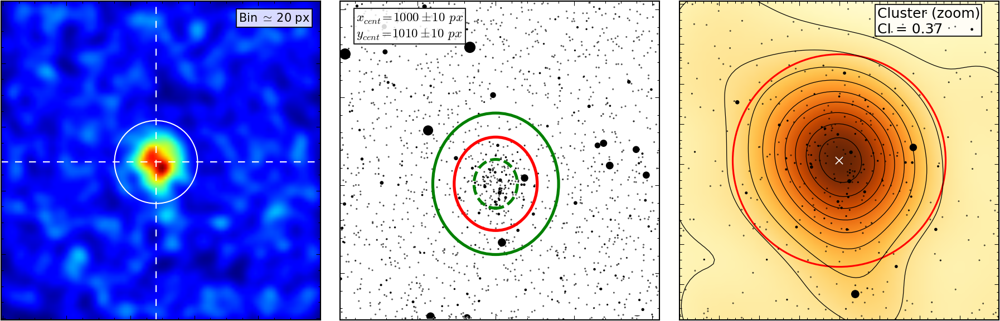

ASteCA¶
| Web: | gabriel-p.github.io/asteca |
|---|---|
| Source: | github.com/Gabriel-p/asteca |
| Documentation: | asteca.rtfd.org |
This is the manual of operation for the ASteCA (Automated Stellar Cluster Analysis) package.
Warning
This documentation is in the process of being written and is not yet finished.